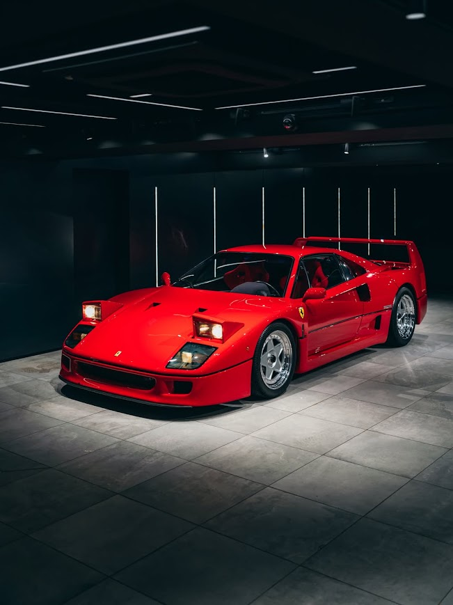
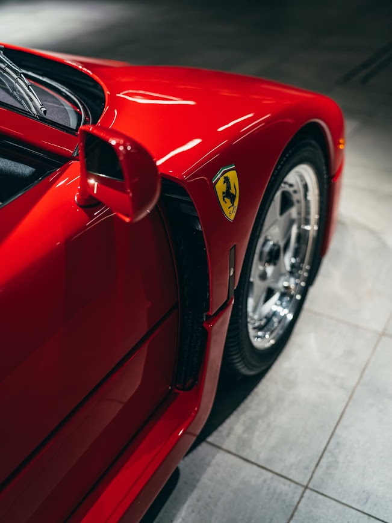
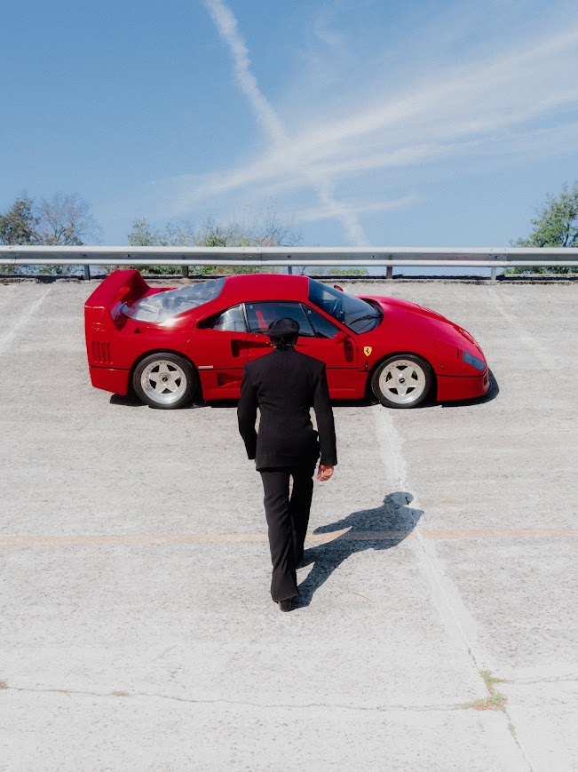

Datos Académicos
Materia: Redes de Computadoras Para el Desarrollo de Software
Tema: Ferrari F40
Alumno: Carlos Alexander Castillo Sosa
Docente: Angelica Perez Hernandez
La Historia del Ferrari F40
El Ferrari F40 es considerado uno de los superdeportivos más icónicos, salvajes y puristas de la historia. Nació como un prototipo de carreras adaptado para la calle, diseñado para transmitir emociones crudas, sin concesiones a la comodidad ni a los lujos modernos.
Origen e Historia
- El hito: Se presentó en 1987 con el objetivo de celebrar el 40º aniversario de la fundación de la marca italiana.
- El último de Enzo: Fue el último automóvil cuyo desarrollo fue sugerido, supervisado y aprobado personalmente por el legendario Enzo Ferrari antes de su fallecimiento.
- Desarrollo exprés: Basado en el prototipo 288 GTO Evoluzione, el F40 fue diseñado, probado y construido bajo un secretismo absoluto en un tiempo récord de apenas 13 meses.
Construcción y Diseño
- Materiales de grado aeroespacial: Diseñado por el estudio Pininfarina (bajo la pluma de Pietro Camardella y Leonardo Fioravanti), utilizó un chasis tubular de acero envuelto en una carrocería construida con paneles de Kevlar, fibra de carbono y aluminio.
- Ultra ligero: Gracias a la obsesión por eliminar peso, incluyendo un interior completamente espartano, el vehículo paraba la báscula en apenas 1,100 kg en seco (2,425 libras).
- Experiencia sin filtros: Para maximizar la conexión entre el piloto y el asfalto, carecía por completo de ayudas a la conducción: no tenía dirección asistida, frenos ABS, ni control de tracción.
Versiones: Manual, Automático y Ediciones Especiales
Ferrari planeaba producir unas 400 unidades, pero la enorme demanda elevó la producción a un total aproximado de 1,311 unidades. Originalmente, el 100% de los autos salían de fábrica en rojo (Rosso Corsa), con el volante a la izquierda y transmisión manual de 5 velocidades.
- El único F40 "Automático": Gianni Agnelli, el entonces presidente del Grupo Fiat, sufría de una antigua lesión en la pierna izquierda que le impedía accionar el duro embrague de un superdeportivo. Ferrari fabricó para él una unidad exclusiva (Chasis 79883) equipada con un sistema automatizado Valeo. El embrague electrónico se accionaba mágicamente con tan solo mover la palanca de cambios manual, permitiendo manejar sin el tercer pedal.
- Las rarezas del Sultán de Brunéi: Pininfarina accedió a modificar al menos siete unidades para la familia real de Brunéi. Estos F40 fueron los únicos con el volante a la derecha de fábrica y se pintaron en colores fuera de catálogo (negro, gris, azul, amarillo). Además, incorporaron lujos impensables para un F40 normal, como asientos de cuero y sistemas de aire acondicionado mejorados.
Versiones de Competición
- F40 LM (Le Mans) / Competizione: Modificados para circuito, con la potencia elevada a unos 700 CV, perdiendo aún más peso. Solo se construyeron 19 unidades.
- F40 GT y GTE: Evoluciones brutales para los campeonatos de Gran Turismo. El F40 GTE generaba tanto torque y era tan veloz que logró vencer al más moderno McLaren F1 GTR en carreras bajo la lluvia.
Famosos dueños del F40
- Nigel Mansell: El campeón mundial de Fórmula 1 compró una unidad y la vendió en 1990 por la cifra récord de 1 millón de libras esterlinas.
- Michele Alboreto: Histórico piloto italiano de F1 que ayudó a probar y popularizar el coche.
- Gianni Agnelli: Dueño de Fiat y de la unidad especial con embrague Valeo.
- Ian James Poulter: El famoso golfista británico y coleccionista de Ferrari, quien adquirió uno en 2013.
Datos Técnicos y Rendimiento
El F40 cimentó su estatus de leyenda al convertirse en el primer coche de producción en romper la barrera de las 200 mph (320 km/h).
| Especificación |
Detalle |
| Motor |
V8 a 90º de 2.9 litros (2936 cm³) biturbo en posición central longitudinal |
| Potencia Máxima |
478 CV (471 HP) a 7,000 rpm |
| Par Máximo |
577 Nm (425 lb-ft) a 4,000 rpm |
| Transmisión |
Tracción trasera (RWD), manual de 5 velocidades |
| Aceleración (0-100 km/h) |
4.1 segundos |
| Velocidad Máxima |
324 km/h (201 mph) |
| Peso en Seco |
1,100 kg (2,425 lbs) |
| Consumo Medio |
12.4 L/100 km (combinado) |
Galería del F40


